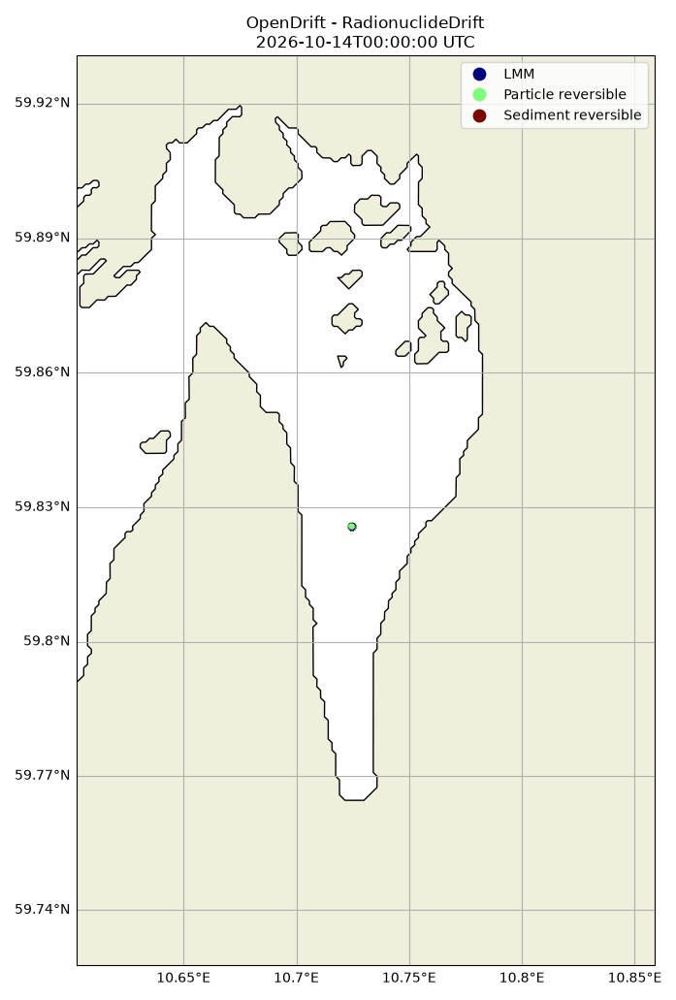
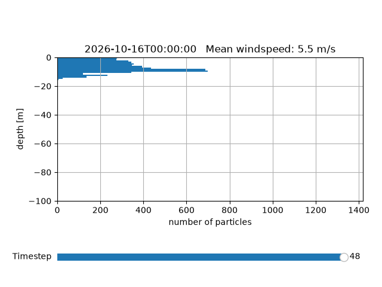
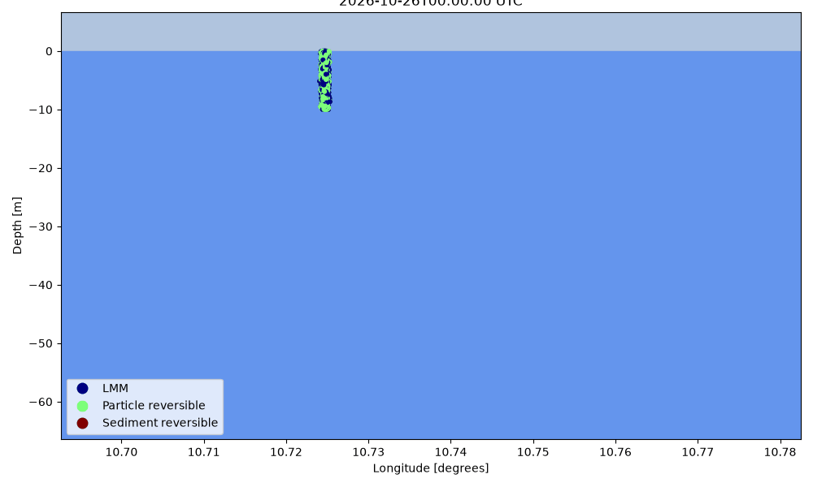

Note
Go to the end to download the full example code.
Radionuclides
from opendrift import test_data_folder as tdf
from opendrift.readers import reader_netCDF_CF_generic
from opendrift.models.radionuclides import RadionuclideDrift
from datetime import timedelta, datetime
import numpy as np
o = RadionuclideDrift(loglevel=20) # Set loglevel to 0 for debug information
# Norkyst
#reader_norkyst = reader_netCDF_CF_generic.Reader(tdf + '/14Jan2016_NorKyst_z_3d/NorKyst-800m_ZDEPTHS_his_00_3Dsubset.nc')
reader_norkyst = reader_netCDF_CF_generic.Reader('https://thredds.met.no/thredds/dodsC/fou-hi/norkystv3_800m_m00_be')
o.add_reader([reader_norkyst])
# Adjusting some configuration
o.set_config('drift:vertical_mixing', True)
#o.set_config('vertical_mixing:diffusivitymodel','constant') # include settling without vertical turbulent mixing
o.set_config('vertical_mixing:diffusivitymodel','environment') # apply vertical diffusivity from ocean model
# Vertical mixing requires fast time step
o.set_config('vertical_mixing:timestep', 600.) # seconds
o.set_config('environment:constant:horizontal_diffusivity', 10)
10:38:25 INFO opendrift:569: OpenDriftSimulation initialised (version 1.14.11 / v1.14.12-52-g71f4a5f)
10:38:25 INFO opendrift.readers:67: Opening file with xr.open_dataset
10:38:26 INFO opendrift.readers.reader_netCDF_CF_generic:340: Detected dimensions: {'x': 'X', 'y': 'Y', 'z': 'depth', 'time': 'time'}
10:38:26 INFO opendrift.readers.basereader:175: Variable x_sea_water_velocity will be rotated from eastward_sea_water_velocity
10:38:26 INFO opendrift.readers.basereader:175: Variable y_sea_water_velocity will be rotated from northward_sea_water_velocity
10:38:26 INFO opendrift.readers.basereader:175: Variable x_wind will be rotated from eastward_wind
10:38:26 INFO opendrift.readers.basereader:175: Variable y_wind will be rotated from northward_wind
o.set_config('radionuclide:particle_diameter',5.e-6) # m
o.set_config('radionuclide:sediment:resuspension_depth',2.)
o.set_config('radionuclide:sediment:resuspension_depth_uncert',0.1)
o.set_config('radionuclide:sediment:resuspension_critvel',0.15)
o.set_config('radionuclide:isotope', '137Cs')
o.set_config('radionuclide:specie_setup','LMM + Rev')
# By default, radionuclides do not strand towards coastline
o.set_config('general:coastline_action', 'previous')
o.set_config('general:seafloor_action','lift_to_seafloor')
o.set_config('seed:LMM_fraction',.45)
o.set_config('seed:particle_fraction',.55)
# SEEDING
td=datetime.today()
time = datetime(td.year, td.month, td.day, 0)
lat = 59.825673
lon = 10.724714
ntraj=5000
iniz=np.random.rand(ntraj) * -10. # seeding the radionuclides in the upper 10m
o.seed_elements(lon, lat, z=iniz, radius=10, number=ntraj, time=time)
10:38:26 INFO opendrift.models.radionuclides:338: All good, isotop: 137Cs, species: LMM + Rev
10:38:26 INFO opendrift.models.radionuclides:273: Number of species: 3
10:38:26 INFO opendrift.models.radionuclides:275: 0 LMM
10:38:26 INFO opendrift.models.radionuclides:275: 1 Particle reversible
10:38:26 INFO opendrift.models.radionuclides:275: 2 Sediment reversible
ISOTOPE 137Cs
10:38:26 INFO opendrift.models.radionuclides:523: ISOTOPE 137Cs
10:38:26 INFO opendrift.models.radionuclides:524: SPECIE SETUP LMM + Rev
10:38:26 INFO opendrift.models.radionuclides:525: Kd: 4.0
10:38:26 INFO opendrift.models.radionuclides:418: Initial speciation:
10:38:26 INFO opendrift.models.radionuclides:420: 2238 0 LMM
10:38:26 INFO opendrift.models.radionuclides:420: 2762 1 Particle reversible
10:38:26 INFO opendrift.models.radionuclides:420: 0 2 Sediment reversible
10:38:26 INFO opendrift.models.radionuclides:440: PARTICLE DIAMETER 5e-06
10:38:26 INFO opendrift.models.radionuclides:452: Min: 4.62e-06, Max: 5.32e-06, Numer of particles seeded: 2762, at normal distribution
10:38:26 INFO opendrift.models.basemodel.environment:203: Adding a global landmask from GSHHG
10:38:32 INFO opendrift.models.basemodel.environment:227: Fallback values will be used for the following variables which have no readers:
10:38:32 INFO opendrift.models.basemodel.environment:230: ocean_mixed_layer_thickness: 50.000000
10:38:32 INFO opendrift.models.basemodel.environment:230: conc3: 0.001000
Running model
o.run(duration=timedelta(hours=48), time_step=1800, time_step_output=3600)
10:38:32 INFO opendrift:1921: Storing previous values of element property lon because of condition (('general:coastline_action', 'in', ['stranding', 'previous']), 'or', ('general:seafloor_action', 'in', ['previous']))
10:38:32 INFO opendrift:1921: Storing previous values of element property lat because of condition (('general:coastline_action', 'in', ['stranding', 'previous']), 'or', ('general:seafloor_action', 'in', ['previous']))
10:38:32 INFO opendrift:958: Using existing reader for land_binary_mask to move elements to ocean
10:38:32 INFO opendrift:989: All points are in ocean
10:38:32 INFO opendrift.models.radionuclides:213: Number of species: 3
10:38:32 INFO opendrift.models.radionuclides:215: 0 LMM
10:38:32 INFO opendrift.models.radionuclides:215: 1 Particle reversible
10:38:32 INFO opendrift.models.radionuclides:215: 2 Sediment reversible
10:38:32 INFO opendrift.models.radionuclides:218: Isotope: 137Cs
10:38:32 INFO opendrift.models.radionuclides:219: specie setup: LMM + Rev
10:38:32 INFO opendrift.models.radionuclides:221: nspecies: 3
10:38:32 INFO opendrift.models.radionuclides:222: Transfer rates:
[[0.00000e+00 4.64000e-08 4.34304e-03]
[1.16000e-05 0.00000e+00 0.00000e+00]
[1.16000e-06 0.00000e+00 0.00000e+00]]
10:38:32 INFO opendrift.models.radionuclides:226: DEPTH_INTERVALS: [-25.0, -10.0, -5.0, -1.0]
10:38:32 INFO opendrift:2237: 2026-10-14 00:00:00 - step 1 of 96 - 5000 active elements (0 deactivated)
10:38:36 INFO opendrift.models.radionuclides:779: Number of transformations: 68
10:38:36 INFO opendrift.models.radionuclides:972: Number of resuspended particles: 0
10:38:36 INFO opendrift.models.radionuclides:1026: Speciation: [np.int64(2306), np.int64(2694), np.int64(0)] ['LMM', 'Particle reversible', 'Sediment reversible']
10:38:36 INFO opendrift:2237: 2026-10-14 00:30:00 - step 2 of 96 - 5000 active elements (0 deactivated)
10:38:38 INFO opendrift.models.radionuclides:779: Number of transformations: 51
10:38:38 INFO opendrift.models.radionuclides:972: Number of resuspended particles: 0
10:38:38 INFO opendrift.models.radionuclides:1026: Speciation: [np.int64(2357), np.int64(2643), np.int64(0)] ['LMM', 'Particle reversible', 'Sediment reversible']
10:38:38 INFO opendrift:2237: 2026-10-14 01:00:00 - step 3 of 96 - 5000 active elements (0 deactivated)
10:38:38 INFO opendrift.models.radionuclides:779: Number of transformations: 39
10:38:39 INFO opendrift.models.radionuclides:972: Number of resuspended particles: 0
10:38:39 INFO opendrift.models.radionuclides:1026: Speciation: [np.int64(2396), np.int64(2604), np.int64(0)] ['LMM', 'Particle reversible', 'Sediment reversible']
10:38:39 INFO opendrift:2237: 2026-10-14 01:30:00 - step 4 of 96 - 5000 active elements (0 deactivated)
10:38:41 INFO opendrift.models.radionuclides:779: Number of transformations: 64
10:38:41 INFO opendrift.models.radionuclides:972: Number of resuspended particles: 0
10:38:41 INFO opendrift.models.radionuclides:1026: Speciation: [np.int64(2456), np.int64(2544), np.int64(0)] ['LMM', 'Particle reversible', 'Sediment reversible']
10:38:41 INFO opendrift:2237: 2026-10-14 02:00:00 - step 5 of 96 - 5000 active elements (0 deactivated)
10:38:41 INFO opendrift.models.radionuclides:779: Number of transformations: 55
10:38:41 INFO opendrift.models.radionuclides:972: Number of resuspended particles: 0
10:38:41 INFO opendrift.models.radionuclides:1026: Speciation: [np.int64(2511), np.int64(2489), np.int64(0)] ['LMM', 'Particle reversible', 'Sediment reversible']
10:38:41 INFO opendrift:2237: 2026-10-14 02:30:00 - step 6 of 96 - 5000 active elements (0 deactivated)
10:38:43 INFO opendrift.models.radionuclides:779: Number of transformations: 50
10:38:44 INFO opendrift.models.radionuclides:972: Number of resuspended particles: 0
10:38:44 INFO opendrift.models.radionuclides:1026: Speciation: [np.int64(2561), np.int64(2439), np.int64(0)] ['LMM', 'Particle reversible', 'Sediment reversible']
10:38:44 INFO opendrift:2237: 2026-10-14 03:00:00 - step 7 of 96 - 5000 active elements (0 deactivated)
10:38:44 INFO opendrift.models.radionuclides:779: Number of transformations: 53
10:38:44 INFO opendrift.models.radionuclides:972: Number of resuspended particles: 0
10:38:44 INFO opendrift.models.radionuclides:1026: Speciation: [np.int64(2614), np.int64(2386), np.int64(0)] ['LMM', 'Particle reversible', 'Sediment reversible']
10:38:44 INFO opendrift:2237: 2026-10-14 03:30:00 - step 8 of 96 - 5000 active elements (0 deactivated)
10:38:48 INFO opendrift.models.radionuclides:779: Number of transformations: 59
10:38:48 INFO opendrift.models.radionuclides:972: Number of resuspended particles: 0
10:38:48 INFO opendrift.models.radionuclides:1026: Speciation: [np.int64(2671), np.int64(2329), np.int64(0)] ['LMM', 'Particle reversible', 'Sediment reversible']
10:38:48 INFO opendrift:2237: 2026-10-14 04:00:00 - step 9 of 96 - 5000 active elements (0 deactivated)
10:38:48 INFO opendrift.models.radionuclides:779: Number of transformations: 47
10:38:48 INFO opendrift.models.radionuclides:972: Number of resuspended particles: 0
10:38:48 INFO opendrift.models.radionuclides:1026: Speciation: [np.int64(2718), np.int64(2282), np.int64(0)] ['LMM', 'Particle reversible', 'Sediment reversible']
10:38:48 INFO opendrift:2237: 2026-10-14 04:30:00 - step 10 of 96 - 5000 active elements (0 deactivated)
10:38:52 INFO opendrift.models.radionuclides:779: Number of transformations: 54
10:38:52 INFO opendrift.models.radionuclides:972: Number of resuspended particles: 0
10:38:52 INFO opendrift.models.radionuclides:1026: Speciation: [np.int64(2772), np.int64(2228), np.int64(0)] ['LMM', 'Particle reversible', 'Sediment reversible']
10:38:52 INFO opendrift:2237: 2026-10-14 05:00:00 - step 11 of 96 - 5000 active elements (0 deactivated)
10:38:52 INFO opendrift.models.radionuclides:779: Number of transformations: 49
10:38:52 INFO opendrift.models.radionuclides:972: Number of resuspended particles: 0
10:38:52 INFO opendrift.models.radionuclides:1026: Speciation: [np.int64(2821), np.int64(2179), np.int64(0)] ['LMM', 'Particle reversible', 'Sediment reversible']
10:38:52 INFO opendrift:2237: 2026-10-14 05:30:00 - step 12 of 96 - 5000 active elements (0 deactivated)
10:38:54 INFO opendrift.models.radionuclides:779: Number of transformations: 56
10:38:54 INFO opendrift.models.radionuclides:972: Number of resuspended particles: 0
10:38:54 INFO opendrift.models.radionuclides:1026: Speciation: [np.int64(2875), np.int64(2125), np.int64(0)] ['LMM', 'Particle reversible', 'Sediment reversible']
10:38:54 INFO opendrift:2237: 2026-10-14 06:00:00 - step 13 of 96 - 5000 active elements (0 deactivated)
10:38:55 INFO opendrift.models.radionuclides:779: Number of transformations: 46
10:38:55 INFO opendrift.models.radionuclides:972: Number of resuspended particles: 0
10:38:55 INFO opendrift.models.radionuclides:1026: Speciation: [np.int64(2921), np.int64(2079), np.int64(0)] ['LMM', 'Particle reversible', 'Sediment reversible']
10:38:55 INFO opendrift:2237: 2026-10-14 06:30:00 - step 14 of 96 - 5000 active elements (0 deactivated)
10:38:59 INFO opendrift.models.radionuclides:779: Number of transformations: 30
10:38:59 INFO opendrift.models.radionuclides:972: Number of resuspended particles: 0
10:38:59 INFO opendrift.models.radionuclides:1026: Speciation: [np.int64(2951), np.int64(2049), np.int64(0)] ['LMM', 'Particle reversible', 'Sediment reversible']
10:38:59 INFO opendrift:2237: 2026-10-14 07:00:00 - step 15 of 96 - 5000 active elements (0 deactivated)
10:38:59 INFO opendrift.models.radionuclides:779: Number of transformations: 50
10:38:59 INFO opendrift.models.radionuclides:972: Number of resuspended particles: 0
10:38:59 INFO opendrift.models.radionuclides:1026: Speciation: [np.int64(2999), np.int64(2000), np.int64(1)] ['LMM', 'Particle reversible', 'Sediment reversible']
10:38:59 INFO opendrift:2237: 2026-10-14 07:30:00 - step 16 of 96 - 5000 active elements (0 deactivated)
10:39:03 INFO opendrift.models.radionuclides:779: Number of transformations: 38
10:39:03 INFO opendrift.models.radionuclides:972: Number of resuspended particles: 0
10:39:03 INFO opendrift.models.radionuclides:1026: Speciation: [np.int64(3037), np.int64(1962), np.int64(1)] ['LMM', 'Particle reversible', 'Sediment reversible']
10:39:03 INFO opendrift:2237: 2026-10-14 08:00:00 - step 17 of 96 - 5000 active elements (0 deactivated)
10:39:03 INFO opendrift.models.radionuclides:779: Number of transformations: 43
10:39:03 INFO opendrift.models.radionuclides:972: Number of resuspended particles: 0
10:39:03 INFO opendrift.models.radionuclides:1026: Speciation: [np.int64(3080), np.int64(1919), np.int64(1)] ['LMM', 'Particle reversible', 'Sediment reversible']
10:39:03 INFO opendrift:2237: 2026-10-14 08:30:00 - step 18 of 96 - 5000 active elements (0 deactivated)
10:39:07 INFO opendrift.models.radionuclides:779: Number of transformations: 33
10:39:07 INFO opendrift.models.radionuclides:972: Number of resuspended particles: 0
10:39:07 INFO opendrift.models.radionuclides:1026: Speciation: [np.int64(3113), np.int64(1886), np.int64(1)] ['LMM', 'Particle reversible', 'Sediment reversible']
10:39:07 INFO opendrift:2237: 2026-10-14 09:00:00 - step 19 of 96 - 5000 active elements (0 deactivated)
10:39:07 INFO opendrift.models.radionuclides:779: Number of transformations: 45
10:39:07 INFO opendrift.models.radionuclides:972: Number of resuspended particles: 0
10:39:07 INFO opendrift.models.radionuclides:1026: Speciation: [np.int64(3156), np.int64(1843), np.int64(1)] ['LMM', 'Particle reversible', 'Sediment reversible']
10:39:07 INFO opendrift:2237: 2026-10-14 09:30:00 - step 20 of 96 - 5000 active elements (0 deactivated)
10:39:09 INFO opendrift.models.radionuclides:779: Number of transformations: 44
10:39:09 INFO opendrift.models.radionuclides:972: Number of resuspended particles: 0
10:39:09 INFO opendrift.models.radionuclides:1026: Speciation: [np.int64(3200), np.int64(1799), np.int64(1)] ['LMM', 'Particle reversible', 'Sediment reversible']
10:39:09 INFO opendrift:2237: 2026-10-14 10:00:00 - step 21 of 96 - 5000 active elements (0 deactivated)
10:39:09 INFO opendrift.models.radionuclides:779: Number of transformations: 36
10:39:09 INFO opendrift.models.radionuclides:972: Number of resuspended particles: 0
10:39:09 INFO opendrift.models.radionuclides:1026: Speciation: [np.int64(3236), np.int64(1763), np.int64(1)] ['LMM', 'Particle reversible', 'Sediment reversible']
10:39:09 INFO opendrift:2237: 2026-10-14 10:30:00 - step 22 of 96 - 5000 active elements (0 deactivated)
10:39:12 INFO opendrift.models.radionuclides:779: Number of transformations: 39
10:39:12 INFO opendrift.models.radionuclides:972: Number of resuspended particles: 0
10:39:12 INFO opendrift.models.radionuclides:1026: Speciation: [np.int64(3275), np.int64(1724), np.int64(1)] ['LMM', 'Particle reversible', 'Sediment reversible']
10:39:12 INFO opendrift:2237: 2026-10-14 11:00:00 - step 23 of 96 - 5000 active elements (0 deactivated)
10:39:12 INFO opendrift.models.radionuclides:779: Number of transformations: 27
10:39:12 INFO opendrift.models.radionuclides:972: Number of resuspended particles: 0
10:39:12 INFO opendrift.models.radionuclides:1026: Speciation: [np.int64(3302), np.int64(1697), np.int64(1)] ['LMM', 'Particle reversible', 'Sediment reversible']
10:39:12 INFO opendrift:2237: 2026-10-14 11:30:00 - step 24 of 96 - 5000 active elements (0 deactivated)
10:39:14 INFO opendrift.models.radionuclides:779: Number of transformations: 32
10:39:14 INFO opendrift.models.radionuclides:972: Number of resuspended particles: 0
10:39:14 INFO opendrift.models.radionuclides:1026: Speciation: [np.int64(3334), np.int64(1665), np.int64(1)] ['LMM', 'Particle reversible', 'Sediment reversible']
10:39:14 INFO opendrift:2237: 2026-10-14 12:00:00 - step 25 of 96 - 5000 active elements (0 deactivated)
10:39:14 INFO opendrift.models.radionuclides:779: Number of transformations: 39
10:39:14 INFO opendrift.models.radionuclides:972: Number of resuspended particles: 0
10:39:14 INFO opendrift.models.radionuclides:1026: Speciation: [np.int64(3373), np.int64(1626), np.int64(1)] ['LMM', 'Particle reversible', 'Sediment reversible']
10:39:14 INFO opendrift:2237: 2026-10-14 12:30:00 - step 26 of 96 - 5000 active elements (0 deactivated)
10:39:16 INFO opendrift.models.radionuclides:779: Number of transformations: 32
10:39:16 INFO opendrift.models.radionuclides:972: Number of resuspended particles: 0
10:39:16 INFO opendrift.models.radionuclides:1026: Speciation: [np.int64(3403), np.int64(1596), np.int64(1)] ['LMM', 'Particle reversible', 'Sediment reversible']
10:39:16 INFO opendrift:2237: 2026-10-14 13:00:00 - step 27 of 96 - 5000 active elements (0 deactivated)
10:39:17 INFO opendrift.models.radionuclides:779: Number of transformations: 37
10:39:17 INFO opendrift.models.radionuclides:972: Number of resuspended particles: 0
10:39:17 INFO opendrift.models.radionuclides:1026: Speciation: [np.int64(3436), np.int64(1563), np.int64(1)] ['LMM', 'Particle reversible', 'Sediment reversible']
10:39:17 INFO opendrift:2237: 2026-10-14 13:30:00 - step 28 of 96 - 5000 active elements (0 deactivated)
10:39:19 INFO opendrift.models.radionuclides:779: Number of transformations: 36
10:39:19 INFO opendrift.models.radionuclides:972: Number of resuspended particles: 0
10:39:19 INFO opendrift.models.radionuclides:1026: Speciation: [np.int64(3468), np.int64(1530), np.int64(2)] ['LMM', 'Particle reversible', 'Sediment reversible']
10:39:19 INFO opendrift:2237: 2026-10-14 14:00:00 - step 29 of 96 - 5000 active elements (0 deactivated)
10:39:19 INFO opendrift.models.radionuclides:779: Number of transformations: 28
10:39:19 INFO opendrift.models.radionuclides:972: Number of resuspended particles: 0
10:39:19 INFO opendrift.models.radionuclides:1026: Speciation: [np.int64(3494), np.int64(1504), np.int64(2)] ['LMM', 'Particle reversible', 'Sediment reversible']
10:39:19 INFO opendrift:2237: 2026-10-14 14:30:00 - step 30 of 96 - 5000 active elements (0 deactivated)
10:39:21 INFO opendrift.models.radionuclides:779: Number of transformations: 44
10:39:21 INFO opendrift.models.radionuclides:972: Number of resuspended particles: 0
10:39:21 INFO opendrift.models.radionuclides:1026: Speciation: [np.int64(3538), np.int64(1460), np.int64(2)] ['LMM', 'Particle reversible', 'Sediment reversible']
10:39:21 INFO opendrift:2237: 2026-10-14 15:00:00 - step 31 of 96 - 5000 active elements (0 deactivated)
10:39:21 INFO opendrift.models.radionuclides:779: Number of transformations: 33
10:39:21 INFO opendrift.models.radionuclides:972: Number of resuspended particles: 0
10:39:21 INFO opendrift.models.radionuclides:1026: Speciation: [np.int64(3571), np.int64(1427), np.int64(2)] ['LMM', 'Particle reversible', 'Sediment reversible']
10:39:21 INFO opendrift:2237: 2026-10-14 15:30:00 - step 32 of 96 - 5000 active elements (0 deactivated)
10:39:36 INFO opendrift.models.radionuclides:779: Number of transformations: 23
10:39:36 INFO opendrift.models.radionuclides:972: Number of resuspended particles: 0
10:39:36 INFO opendrift.models.radionuclides:1026: Speciation: [np.int64(3592), np.int64(1406), np.int64(2)] ['LMM', 'Particle reversible', 'Sediment reversible']
10:39:36 INFO opendrift:2237: 2026-10-14 16:00:00 - step 33 of 96 - 5000 active elements (0 deactivated)
10:39:36 INFO opendrift.models.radionuclides:779: Number of transformations: 31
10:39:36 INFO opendrift.models.radionuclides:972: Number of resuspended particles: 0
10:39:36 INFO opendrift.models.radionuclides:1026: Speciation: [np.int64(3623), np.int64(1375), np.int64(2)] ['LMM', 'Particle reversible', 'Sediment reversible']
10:39:36 INFO opendrift:2237: 2026-10-14 16:30:00 - step 34 of 96 - 5000 active elements (0 deactivated)
10:39:38 INFO opendrift.models.radionuclides:779: Number of transformations: 31
10:39:38 INFO opendrift.models.radionuclides:972: Number of resuspended particles: 0
10:39:38 INFO opendrift.models.radionuclides:1026: Speciation: [np.int64(3654), np.int64(1344), np.int64(2)] ['LMM', 'Particle reversible', 'Sediment reversible']
10:39:38 INFO opendrift:2237: 2026-10-14 17:00:00 - step 35 of 96 - 5000 active elements (0 deactivated)
10:39:38 INFO opendrift.models.radionuclides:779: Number of transformations: 33
10:39:38 INFO opendrift.models.radionuclides:972: Number of resuspended particles: 0
10:39:38 INFO opendrift.models.radionuclides:1026: Speciation: [np.int64(3687), np.int64(1311), np.int64(2)] ['LMM', 'Particle reversible', 'Sediment reversible']
10:39:38 INFO opendrift:2237: 2026-10-14 17:30:00 - step 36 of 96 - 5000 active elements (0 deactivated)
10:39:40 INFO opendrift.models.radionuclides:779: Number of transformations: 34
10:39:40 INFO opendrift.models.radionuclides:972: Number of resuspended particles: 0
10:39:40 INFO opendrift.models.radionuclides:1026: Speciation: [np.int64(3721), np.int64(1277), np.int64(2)] ['LMM', 'Particle reversible', 'Sediment reversible']
10:39:40 INFO opendrift:2237: 2026-10-14 18:00:00 - step 37 of 96 - 5000 active elements (0 deactivated)
10:39:41 INFO opendrift.models.radionuclides:779: Number of transformations: 30
10:39:41 INFO opendrift.models.radionuclides:972: Number of resuspended particles: 0
10:39:41 INFO opendrift.models.radionuclides:1026: Speciation: [np.int64(3751), np.int64(1247), np.int64(2)] ['LMM', 'Particle reversible', 'Sediment reversible']
10:39:41 INFO opendrift:2237: 2026-10-14 18:30:00 - step 38 of 96 - 5000 active elements (0 deactivated)
10:39:43 INFO opendrift.models.radionuclides:779: Number of transformations: 26
10:39:43 INFO opendrift.models.radionuclides:972: Number of resuspended particles: 0
10:39:43 INFO opendrift.models.radionuclides:1026: Speciation: [np.int64(3777), np.int64(1221), np.int64(2)] ['LMM', 'Particle reversible', 'Sediment reversible']
10:39:43 INFO opendrift:2237: 2026-10-14 19:00:00 - step 39 of 96 - 5000 active elements (0 deactivated)
10:39:43 INFO opendrift.models.radionuclides:779: Number of transformations: 28
10:39:43 INFO opendrift.models.radionuclides:972: Number of resuspended particles: 0
10:39:43 INFO opendrift.models.radionuclides:1026: Speciation: [np.int64(3803), np.int64(1195), np.int64(2)] ['LMM', 'Particle reversible', 'Sediment reversible']
10:39:43 INFO opendrift:2237: 2026-10-14 19:30:00 - step 40 of 96 - 5000 active elements (0 deactivated)
10:39:45 INFO opendrift.models.radionuclides:779: Number of transformations: 22
10:39:45 INFO opendrift.models.radionuclides:972: Number of resuspended particles: 0
10:39:45 INFO opendrift.models.radionuclides:1026: Speciation: [np.int64(3825), np.int64(1173), np.int64(2)] ['LMM', 'Particle reversible', 'Sediment reversible']
10:39:45 INFO opendrift:2237: 2026-10-14 20:00:00 - step 41 of 96 - 5000 active elements (0 deactivated)
10:39:45 INFO opendrift.models.radionuclides:779: Number of transformations: 31
10:39:45 INFO opendrift.models.radionuclides:972: Number of resuspended particles: 0
10:39:45 INFO opendrift.models.radionuclides:1026: Speciation: [np.int64(3854), np.int64(1144), np.int64(2)] ['LMM', 'Particle reversible', 'Sediment reversible']
10:39:45 INFO opendrift:2237: 2026-10-14 20:30:00 - step 42 of 96 - 5000 active elements (0 deactivated)
10:39:48 INFO opendrift.models.radionuclides:779: Number of transformations: 17
10:39:48 INFO opendrift.models.radionuclides:972: Number of resuspended particles: 0
10:39:48 INFO opendrift.models.radionuclides:1026: Speciation: [np.int64(3869), np.int64(1129), np.int64(2)] ['LMM', 'Particle reversible', 'Sediment reversible']
10:39:48 INFO opendrift:2237: 2026-10-14 21:00:00 - step 43 of 96 - 5000 active elements (0 deactivated)
10:39:48 INFO opendrift.models.radionuclides:779: Number of transformations: 33
10:39:48 INFO opendrift.models.radionuclides:972: Number of resuspended particles: 0
10:39:48 INFO opendrift.models.radionuclides:1026: Speciation: [np.int64(3900), np.int64(1098), np.int64(2)] ['LMM', 'Particle reversible', 'Sediment reversible']
10:39:48 INFO opendrift:2237: 2026-10-14 21:30:00 - step 44 of 96 - 5000 active elements (0 deactivated)
10:39:50 INFO opendrift.models.radionuclides:779: Number of transformations: 26
10:39:50 INFO opendrift.models.radionuclides:972: Number of resuspended particles: 0
10:39:50 INFO opendrift.models.radionuclides:1026: Speciation: [np.int64(3926), np.int64(1072), np.int64(2)] ['LMM', 'Particle reversible', 'Sediment reversible']
10:39:50 INFO opendrift:2237: 2026-10-14 22:00:00 - step 45 of 96 - 5000 active elements (0 deactivated)
10:39:50 INFO opendrift.models.radionuclides:779: Number of transformations: 29
10:39:50 INFO opendrift.models.radionuclides:972: Number of resuspended particles: 0
10:39:50 INFO opendrift.models.radionuclides:1026: Speciation: [np.int64(3955), np.int64(1043), np.int64(2)] ['LMM', 'Particle reversible', 'Sediment reversible']
10:39:50 INFO opendrift:2237: 2026-10-14 22:30:00 - step 46 of 96 - 5000 active elements (0 deactivated)
10:39:52 INFO opendrift.models.radionuclides:779: Number of transformations: 27
10:39:52 INFO opendrift.models.radionuclides:972: Number of resuspended particles: 0
10:39:52 INFO opendrift.models.radionuclides:1026: Speciation: [np.int64(3978), np.int64(1020), np.int64(2)] ['LMM', 'Particle reversible', 'Sediment reversible']
10:39:52 INFO opendrift:2237: 2026-10-14 23:00:00 - step 47 of 96 - 5000 active elements (0 deactivated)
10:39:52 INFO opendrift.models.radionuclides:779: Number of transformations: 12
10:39:52 INFO opendrift.models.radionuclides:972: Number of resuspended particles: 0
10:39:52 INFO opendrift.models.radionuclides:1026: Speciation: [np.int64(3990), np.int64(1008), np.int64(2)] ['LMM', 'Particle reversible', 'Sediment reversible']
10:39:52 INFO opendrift:2237: 2026-10-14 23:30:00 - step 48 of 96 - 5000 active elements (0 deactivated)
10:39:55 INFO opendrift.models.radionuclides:779: Number of transformations: 32
10:39:55 INFO opendrift.models.radionuclides:972: Number of resuspended particles: 0
10:39:55 INFO opendrift.models.radionuclides:1026: Speciation: [np.int64(4020), np.int64(978), np.int64(2)] ['LMM', 'Particle reversible', 'Sediment reversible']
10:39:55 INFO opendrift:2237: 2026-10-15 00:00:00 - step 49 of 96 - 5000 active elements (0 deactivated)
10:39:55 INFO opendrift.models.radionuclides:779: Number of transformations: 17
10:39:55 INFO opendrift.models.radionuclides:972: Number of resuspended particles: 0
10:39:55 INFO opendrift.models.radionuclides:1026: Speciation: [np.int64(4037), np.int64(961), np.int64(2)] ['LMM', 'Particle reversible', 'Sediment reversible']
10:39:55 INFO opendrift:2237: 2026-10-15 00:30:00 - step 50 of 96 - 5000 active elements (0 deactivated)
10:39:57 INFO opendrift.models.radionuclides:779: Number of transformations: 21
10:39:57 INFO opendrift.models.radionuclides:972: Number of resuspended particles: 0
10:39:57 INFO opendrift.models.radionuclides:1026: Speciation: [np.int64(4058), np.int64(940), np.int64(2)] ['LMM', 'Particle reversible', 'Sediment reversible']
10:39:57 INFO opendrift:2237: 2026-10-15 01:00:00 - step 51 of 96 - 5000 active elements (0 deactivated)
10:39:57 INFO opendrift.models.radionuclides:779: Number of transformations: 18
10:39:57 INFO opendrift.models.radionuclides:972: Number of resuspended particles: 0
10:39:57 INFO opendrift.models.radionuclides:1026: Speciation: [np.int64(4076), np.int64(922), np.int64(2)] ['LMM', 'Particle reversible', 'Sediment reversible']
10:39:57 INFO opendrift:2237: 2026-10-15 01:30:00 - step 52 of 96 - 5000 active elements (0 deactivated)
10:39:59 INFO opendrift.models.radionuclides:779: Number of transformations: 17
10:39:59 INFO opendrift.models.radionuclides:972: Number of resuspended particles: 0
10:39:59 INFO opendrift.models.radionuclides:1026: Speciation: [np.int64(4093), np.int64(905), np.int64(2)] ['LMM', 'Particle reversible', 'Sediment reversible']
10:39:59 INFO opendrift:2237: 2026-10-15 02:00:00 - step 53 of 96 - 5000 active elements (0 deactivated)
10:39:59 INFO opendrift.models.radionuclides:779: Number of transformations: 23
10:39:59 INFO opendrift.models.radionuclides:972: Number of resuspended particles: 0
10:39:59 INFO opendrift.models.radionuclides:1026: Speciation: [np.int64(4114), np.int64(884), np.int64(2)] ['LMM', 'Particle reversible', 'Sediment reversible']
10:39:59 INFO opendrift:2237: 2026-10-15 02:30:00 - step 54 of 96 - 5000 active elements (0 deactivated)
10:40:01 INFO opendrift.models.radionuclides:779: Number of transformations: 18
10:40:01 INFO opendrift.models.radionuclides:972: Number of resuspended particles: 0
10:40:01 INFO opendrift.models.radionuclides:1026: Speciation: [np.int64(4130), np.int64(867), np.int64(3)] ['LMM', 'Particle reversible', 'Sediment reversible']
10:40:01 INFO opendrift:2237: 2026-10-15 03:00:00 - step 55 of 96 - 5000 active elements (0 deactivated)
10:40:01 INFO opendrift.models.radionuclides:779: Number of transformations: 18
10:40:01 INFO opendrift.models.radionuclides:972: Number of resuspended particles: 0
10:40:01 INFO opendrift.models.radionuclides:1026: Speciation: [np.int64(4148), np.int64(849), np.int64(3)] ['LMM', 'Particle reversible', 'Sediment reversible']
10:40:01 INFO opendrift:2237: 2026-10-15 03:30:00 - step 56 of 96 - 5000 active elements (0 deactivated)
10:40:03 INFO opendrift.models.radionuclides:779: Number of transformations: 9
10:40:03 INFO opendrift.models.radionuclides:972: Number of resuspended particles: 0
10:40:03 INFO opendrift.models.radionuclides:1026: Speciation: [np.int64(4155), np.int64(841), np.int64(4)] ['LMM', 'Particle reversible', 'Sediment reversible']
10:40:03 INFO opendrift:2237: 2026-10-15 04:00:00 - step 57 of 96 - 5000 active elements (0 deactivated)
10:40:03 INFO opendrift.models.radionuclides:779: Number of transformations: 22
10:40:03 INFO opendrift.models.radionuclides:972: Number of resuspended particles: 0
10:40:03 INFO opendrift.models.radionuclides:1026: Speciation: [np.int64(4177), np.int64(819), np.int64(4)] ['LMM', 'Particle reversible', 'Sediment reversible']
10:40:03 INFO opendrift:2237: 2026-10-15 04:30:00 - step 58 of 96 - 5000 active elements (0 deactivated)
10:40:06 INFO opendrift.models.radionuclides:779: Number of transformations: 22
10:40:06 INFO opendrift.models.radionuclides:972: Number of resuspended particles: 0
10:40:06 INFO opendrift.models.radionuclides:1026: Speciation: [np.int64(4199), np.int64(797), np.int64(4)] ['LMM', 'Particle reversible', 'Sediment reversible']
10:40:06 INFO opendrift:2237: 2026-10-15 05:00:00 - step 59 of 96 - 5000 active elements (0 deactivated)
10:40:06 INFO opendrift.models.radionuclides:779: Number of transformations: 11
10:40:06 INFO opendrift.models.radionuclides:972: Number of resuspended particles: 0
10:40:06 INFO opendrift.models.radionuclides:1026: Speciation: [np.int64(4210), np.int64(786), np.int64(4)] ['LMM', 'Particle reversible', 'Sediment reversible']
10:40:06 INFO opendrift:2237: 2026-10-15 05:30:00 - step 60 of 96 - 5000 active elements (0 deactivated)
10:40:08 INFO opendrift.models.radionuclides:779: Number of transformations: 24
10:40:08 INFO opendrift.models.radionuclides:972: Number of resuspended particles: 0
10:40:08 INFO opendrift.models.radionuclides:1026: Speciation: [np.int64(4234), np.int64(762), np.int64(4)] ['LMM', 'Particle reversible', 'Sediment reversible']
10:40:08 INFO opendrift:2237: 2026-10-15 06:00:00 - step 61 of 96 - 5000 active elements (0 deactivated)
10:40:08 INFO opendrift.models.radionuclides:779: Number of transformations: 12
10:40:08 INFO opendrift.models.radionuclides:972: Number of resuspended particles: 0
10:40:08 INFO opendrift.models.radionuclides:1026: Speciation: [np.int64(4246), np.int64(750), np.int64(4)] ['LMM', 'Particle reversible', 'Sediment reversible']
10:40:08 INFO opendrift:2237: 2026-10-15 06:30:00 - step 62 of 96 - 5000 active elements (0 deactivated)
10:40:09 INFO opendrift.models.radionuclides:779: Number of transformations: 14
10:40:09 INFO opendrift.models.radionuclides:972: Number of resuspended particles: 0
10:40:09 INFO opendrift.models.radionuclides:1026: Speciation: [np.int64(4260), np.int64(736), np.int64(4)] ['LMM', 'Particle reversible', 'Sediment reversible']
10:40:09 INFO opendrift:2237: 2026-10-15 07:00:00 - step 63 of 96 - 5000 active elements (0 deactivated)
10:40:10 INFO opendrift.models.radionuclides:779: Number of transformations: 19
10:40:10 INFO opendrift.models.radionuclides:972: Number of resuspended particles: 0
10:40:10 INFO opendrift.models.radionuclides:1026: Speciation: [np.int64(4279), np.int64(717), np.int64(4)] ['LMM', 'Particle reversible', 'Sediment reversible']
10:40:10 INFO opendrift:2237: 2026-10-15 07:30:00 - step 64 of 96 - 5000 active elements (0 deactivated)
10:40:11 INFO opendrift.models.radionuclides:779: Number of transformations: 16
10:40:11 INFO opendrift.models.radionuclides:972: Number of resuspended particles: 0
10:40:11 INFO opendrift.models.radionuclides:1026: Speciation: [np.int64(4293), np.int64(702), np.int64(5)] ['LMM', 'Particle reversible', 'Sediment reversible']
10:40:11 INFO opendrift:2237: 2026-10-15 08:00:00 - step 65 of 96 - 5000 active elements (0 deactivated)
10:40:11 INFO opendrift.models.radionuclides:779: Number of transformations: 14
10:40:11 INFO opendrift.models.radionuclides:972: Number of resuspended particles: 0
10:40:11 INFO opendrift.models.radionuclides:1026: Speciation: [np.int64(4305), np.int64(689), np.int64(6)] ['LMM', 'Particle reversible', 'Sediment reversible']
10:40:11 INFO opendrift:2237: 2026-10-15 08:30:00 - step 66 of 96 - 5000 active elements (0 deactivated)
10:40:13 INFO opendrift.models.radionuclides:779: Number of transformations: 16
10:40:13 INFO opendrift.models.radionuclides:972: Number of resuspended particles: 0
10:40:13 INFO opendrift.models.radionuclides:1026: Speciation: [np.int64(4321), np.int64(673), np.int64(6)] ['LMM', 'Particle reversible', 'Sediment reversible']
10:40:13 INFO opendrift:2237: 2026-10-15 09:00:00 - step 67 of 96 - 5000 active elements (0 deactivated)
10:40:13 INFO opendrift.models.radionuclides:779: Number of transformations: 14
10:40:13 INFO opendrift.models.radionuclides:972: Number of resuspended particles: 0
10:40:13 INFO opendrift.models.radionuclides:1026: Speciation: [np.int64(4329), np.int64(664), np.int64(7)] ['LMM', 'Particle reversible', 'Sediment reversible']
10:40:13 INFO opendrift:2237: 2026-10-15 09:30:00 - step 68 of 96 - 5000 active elements (0 deactivated)
10:40:15 INFO opendrift.models.radionuclides:779: Number of transformations: 14
10:40:15 INFO opendrift.models.radionuclides:972: Number of resuspended particles: 0
10:40:15 INFO opendrift.models.radionuclides:1026: Speciation: [np.int64(4343), np.int64(650), np.int64(7)] ['LMM', 'Particle reversible', 'Sediment reversible']
10:40:15 INFO opendrift:2237: 2026-10-15 10:00:00 - step 69 of 96 - 5000 active elements (0 deactivated)
10:40:15 INFO opendrift.models.radionuclides:779: Number of transformations: 17
10:40:15 INFO opendrift.models.radionuclides:972: Number of resuspended particles: 0
10:40:15 INFO opendrift.models.radionuclides:1026: Speciation: [np.int64(4358), np.int64(634), np.int64(8)] ['LMM', 'Particle reversible', 'Sediment reversible']
10:40:15 INFO opendrift:2237: 2026-10-15 10:30:00 - step 70 of 96 - 5000 active elements (0 deactivated)
10:40:17 INFO opendrift.models.radionuclides:779: Number of transformations: 18
10:40:17 INFO opendrift.models.radionuclides:972: Number of resuspended particles: 0
10:40:17 INFO opendrift.models.radionuclides:1026: Speciation: [np.int64(4374), np.int64(617), np.int64(9)] ['LMM', 'Particle reversible', 'Sediment reversible']
10:40:17 INFO opendrift:2237: 2026-10-15 11:00:00 - step 71 of 96 - 5000 active elements (0 deactivated)
10:40:18 INFO opendrift.models.radionuclides:779: Number of transformations: 14
10:40:18 INFO opendrift.models.radionuclides:972: Number of resuspended particles: 0
10:40:18 INFO opendrift.models.radionuclides:1026: Speciation: [np.int64(4384), np.int64(606), np.int64(10)] ['LMM', 'Particle reversible', 'Sediment reversible']
10:40:18 INFO opendrift:2237: 2026-10-15 11:30:00 - step 72 of 96 - 5000 active elements (0 deactivated)
10:40:20 INFO opendrift.models.radionuclides:779: Number of transformations: 14
10:40:20 INFO opendrift.models.radionuclides:972: Number of resuspended particles: 0
10:40:20 INFO opendrift.models.radionuclides:1026: Speciation: [np.int64(4394), np.int64(594), np.int64(12)] ['LMM', 'Particle reversible', 'Sediment reversible']
10:40:20 INFO opendrift:2237: 2026-10-15 12:00:00 - step 73 of 96 - 5000 active elements (0 deactivated)
10:40:20 INFO opendrift.models.radionuclides:779: Number of transformations: 11
10:40:20 INFO opendrift.models.radionuclides:972: Number of resuspended particles: 0
10:40:20 INFO opendrift.models.radionuclides:1026: Speciation: [np.int64(4401), np.int64(586), np.int64(13)] ['LMM', 'Particle reversible', 'Sediment reversible']
10:40:20 INFO opendrift:2237: 2026-10-15 12:30:00 - step 74 of 96 - 5000 active elements (0 deactivated)
10:40:23 INFO opendrift.models.radionuclides:779: Number of transformations: 11
10:40:23 INFO opendrift.models.radionuclides:972: Number of resuspended particles: 0
10:40:23 INFO opendrift.models.radionuclides:1026: Speciation: [np.int64(4412), np.int64(575), np.int64(13)] ['LMM', 'Particle reversible', 'Sediment reversible']
10:40:23 INFO opendrift:2237: 2026-10-15 13:00:00 - step 75 of 96 - 5000 active elements (0 deactivated)
10:40:23 INFO opendrift.models.radionuclides:779: Number of transformations: 20
10:40:23 INFO opendrift.models.radionuclides:972: Number of resuspended particles: 0
10:40:23 INFO opendrift.models.radionuclides:1026: Speciation: [np.int64(4428), np.int64(557), np.int64(15)] ['LMM', 'Particle reversible', 'Sediment reversible']
10:40:23 INFO opendrift:2237: 2026-10-15 13:30:00 - step 76 of 96 - 5000 active elements (0 deactivated)
10:40:26 INFO opendrift.models.radionuclides:779: Number of transformations: 9
10:40:26 INFO opendrift.models.radionuclides:972: Number of resuspended particles: 0
10:40:26 INFO opendrift.models.radionuclides:1026: Speciation: [np.int64(4431), np.int64(552), np.int64(17)] ['LMM', 'Particle reversible', 'Sediment reversible']
10:40:26 INFO opendrift:2237: 2026-10-15 14:00:00 - step 77 of 96 - 5000 active elements (0 deactivated)
10:40:26 INFO opendrift.models.radionuclides:779: Number of transformations: 15
10:40:26 INFO opendrift.models.radionuclides:972: Number of resuspended particles: 0
10:40:26 INFO opendrift.models.radionuclides:1026: Speciation: [np.int64(4434), np.int64(544), np.int64(22)] ['LMM', 'Particle reversible', 'Sediment reversible']
10:40:26 INFO opendrift:2237: 2026-10-15 14:30:00 - step 78 of 96 - 5000 active elements (0 deactivated)
10:40:29 INFO opendrift.models.radionuclides:779: Number of transformations: 10
10:40:29 INFO opendrift.models.radionuclides:972: Number of resuspended particles: 0
10:40:29 INFO opendrift.models.radionuclides:1026: Speciation: [np.int64(4438), np.int64(537), np.int64(25)] ['LMM', 'Particle reversible', 'Sediment reversible']
10:40:29 INFO opendrift:2237: 2026-10-15 15:00:00 - step 79 of 96 - 5000 active elements (0 deactivated)
10:40:30 INFO opendrift.models.radionuclides:779: Number of transformations: 12
10:40:30 INFO opendrift.models.radionuclides:972: Number of resuspended particles: 0
10:40:30 INFO opendrift.models.radionuclides:1026: Speciation: [np.int64(4450), np.int64(525), np.int64(25)] ['LMM', 'Particle reversible', 'Sediment reversible']
10:40:30 INFO opendrift:2237: 2026-10-15 15:30:00 - step 80 of 96 - 5000 active elements (0 deactivated)
10:40:32 INFO opendrift.models.radionuclides:779: Number of transformations: 17
10:40:32 INFO opendrift.models.radionuclides:972: Number of resuspended particles: 0
10:40:32 INFO opendrift.models.radionuclides:1026: Speciation: [np.int64(4457), np.int64(513), np.int64(30)] ['LMM', 'Particle reversible', 'Sediment reversible']
10:40:32 INFO opendrift:2237: 2026-10-15 16:00:00 - step 81 of 96 - 5000 active elements (0 deactivated)
10:40:32 INFO opendrift.models.radionuclides:779: Number of transformations: 22
10:40:32 INFO opendrift.models.radionuclides:972: Number of resuspended particles: 0
10:40:32 INFO opendrift.models.radionuclides:1026: Speciation: [np.int64(4459), np.int64(502), np.int64(39)] ['LMM', 'Particle reversible', 'Sediment reversible']
10:40:32 INFO opendrift:2237: 2026-10-15 16:30:00 - step 82 of 96 - 5000 active elements (0 deactivated)
10:40:35 INFO opendrift.models.radionuclides:779: Number of transformations: 26
10:40:35 INFO opendrift.models.radionuclides:972: Number of resuspended particles: 0
10:40:35 INFO opendrift.models.radionuclides:1026: Speciation: [np.int64(4471), np.int64(486), np.int64(43)] ['LMM', 'Particle reversible', 'Sediment reversible']
10:40:35 INFO opendrift:2237: 2026-10-15 17:00:00 - step 83 of 96 - 5000 active elements (0 deactivated)
10:40:35 INFO opendrift.models.radionuclides:779: Number of transformations: 13
10:40:35 INFO opendrift.models.radionuclides:972: Number of resuspended particles: 0
10:40:35 INFO opendrift.models.radionuclides:1026: Speciation: [np.int64(4470), np.int64(480), np.int64(50)] ['LMM', 'Particle reversible', 'Sediment reversible']
10:40:35 INFO opendrift:2237: 2026-10-15 17:30:00 - step 84 of 96 - 5000 active elements (0 deactivated)
10:40:38 INFO opendrift.models.radionuclides:779: Number of transformations: 12
10:40:38 INFO opendrift.models.radionuclides:972: Number of resuspended particles: 0
10:40:38 INFO opendrift.models.radionuclides:1026: Speciation: [np.int64(4474), np.int64(472), np.int64(54)] ['LMM', 'Particle reversible', 'Sediment reversible']
10:40:38 INFO opendrift:2237: 2026-10-15 18:00:00 - step 85 of 96 - 5000 active elements (0 deactivated)
10:40:38 INFO opendrift.models.radionuclides:779: Number of transformations: 11
10:40:38 INFO opendrift.models.radionuclides:972: Number of resuspended particles: 0
10:40:38 INFO opendrift.models.radionuclides:1026: Speciation: [np.int64(4477), np.int64(465), np.int64(58)] ['LMM', 'Particle reversible', 'Sediment reversible']
10:40:38 INFO opendrift:2237: 2026-10-15 18:30:00 - step 86 of 96 - 5000 active elements (0 deactivated)
10:40:42 INFO opendrift.models.radionuclides:779: Number of transformations: 20
10:40:42 INFO opendrift.models.radionuclides:972: Number of resuspended particles: 0
10:40:42 INFO opendrift.models.radionuclides:1026: Speciation: [np.int64(4483), np.int64(452), np.int64(65)] ['LMM', 'Particle reversible', 'Sediment reversible']
10:40:42 INFO opendrift:2237: 2026-10-15 19:00:00 - step 87 of 96 - 5000 active elements (0 deactivated)
10:40:42 INFO opendrift.models.radionuclides:779: Number of transformations: 10
10:40:42 INFO opendrift.models.radionuclides:972: Number of resuspended particles: 0
10:40:42 INFO opendrift.models.radionuclides:1026: Speciation: [np.int64(4485), np.int64(446), np.int64(69)] ['LMM', 'Particle reversible', 'Sediment reversible']
10:40:42 INFO opendrift:2237: 2026-10-15 19:30:00 - step 88 of 96 - 5000 active elements (0 deactivated)
10:40:45 INFO opendrift.models.radionuclides:779: Number of transformations: 12
10:40:45 INFO opendrift.models.radionuclides:972: Number of resuspended particles: 0
10:40:45 INFO opendrift.models.radionuclides:1026: Speciation: [np.int64(4489), np.int64(439), np.int64(72)] ['LMM', 'Particle reversible', 'Sediment reversible']
10:40:45 INFO opendrift:2237: 2026-10-15 20:00:00 - step 89 of 96 - 5000 active elements (0 deactivated)
10:40:45 INFO opendrift.models.radionuclides:779: Number of transformations: 15
10:40:45 INFO opendrift.models.radionuclides:972: Number of resuspended particles: 0
10:40:45 INFO opendrift.models.radionuclides:1026: Speciation: [np.int64(4492), np.int64(431), np.int64(77)] ['LMM', 'Particle reversible', 'Sediment reversible']
10:40:45 INFO opendrift:2237: 2026-10-15 20:30:00 - step 90 of 96 - 5000 active elements (0 deactivated)
10:40:59 INFO opendrift.models.radionuclides:779: Number of transformations: 14
10:40:59 INFO opendrift.models.radionuclides:972: Number of resuspended particles: 0
10:40:59 INFO opendrift.models.radionuclides:1026: Speciation: [np.int64(4490), np.int64(425), np.int64(85)] ['LMM', 'Particle reversible', 'Sediment reversible']
10:40:59 INFO opendrift:2237: 2026-10-15 21:00:00 - step 91 of 96 - 5000 active elements (0 deactivated)
10:40:59 INFO opendrift.models.radionuclides:779: Number of transformations: 12
10:40:59 INFO opendrift.models.radionuclides:972: Number of resuspended particles: 0
10:40:59 INFO opendrift.models.radionuclides:1026: Speciation: [np.int64(4496), np.int64(416), np.int64(88)] ['LMM', 'Particle reversible', 'Sediment reversible']
10:40:59 INFO opendrift:2237: 2026-10-15 21:30:00 - step 92 of 96 - 5000 active elements (0 deactivated)
10:41:02 INFO opendrift.models.radionuclides:779: Number of transformations: 22
10:41:02 INFO opendrift.models.radionuclides:972: Number of resuspended particles: 0
10:41:02 INFO opendrift.models.radionuclides:1026: Speciation: [np.int64(4506), np.int64(400), np.int64(94)] ['LMM', 'Particle reversible', 'Sediment reversible']
10:41:03 INFO opendrift:2237: 2026-10-15 22:00:00 - step 93 of 96 - 5000 active elements (0 deactivated)
10:41:03 INFO opendrift.models.radionuclides:779: Number of transformations: 19
10:41:03 INFO opendrift.models.radionuclides:972: Number of resuspended particles: 0
10:41:03 INFO opendrift.models.radionuclides:1026: Speciation: [np.int64(4513), np.int64(387), np.int64(100)] ['LMM', 'Particle reversible', 'Sediment reversible']
10:41:03 INFO opendrift:2237: 2026-10-15 22:30:00 - step 94 of 96 - 5000 active elements (0 deactivated)
10:41:05 INFO opendrift.models.radionuclides:779: Number of transformations: 23
10:41:05 INFO opendrift.models.radionuclides:972: Number of resuspended particles: 0
10:41:05 INFO opendrift.models.radionuclides:1026: Speciation: [np.int64(4524), np.int64(373), np.int64(103)] ['LMM', 'Particle reversible', 'Sediment reversible']
10:41:05 INFO opendrift:2237: 2026-10-15 23:00:00 - step 95 of 96 - 5000 active elements (0 deactivated)
10:41:06 INFO opendrift.models.radionuclides:779: Number of transformations: 14
10:41:06 INFO opendrift.models.radionuclides:972: Number of resuspended particles: 0
10:41:06 INFO opendrift.models.radionuclides:1026: Speciation: [np.int64(4526), np.int64(366), np.int64(108)] ['LMM', 'Particle reversible', 'Sediment reversible']
10:41:06 INFO opendrift:2237: 2026-10-15 23:30:00 - step 96 of 96 - 5000 active elements (0 deactivated)
10:41:11 INFO opendrift.models.radionuclides:779: Number of transformations: 15
10:41:11 INFO opendrift.models.radionuclides:972: Number of resuspended particles: 0
10:41:11 INFO opendrift.models.radionuclides:1026: Speciation: [np.int64(4529), np.int64(359), np.int64(112)] ['LMM', 'Particle reversible', 'Sediment reversible']
Print and plot results
print(o)
print('Final speciation:')
for isp,sp in enumerate(o.name_species):
print ('{:32}: {:>6}'.format(sp,sum(o.elements.specie==isp)))
print('Number of transformations:')
for isp in range(o.nspecies):
print('{}'.format(['{:>9}'.format(np.int32(item)) for item in o.ntransformations[isp,:]]) )
o.animation(color='specie',
vmin=0,vmax=o.nspecies-1,
colorbar=False,
legend=[o.specie_num2name(i) for i in range(o.nspecies)],
)
===========================
--------------------
Reader performance:
--------------------
https://thredds.met.no/thredds/dodsC/fou-hi/norkystv3_800m_m00_be
0:02:29.8 total
0:00:00.0 preparing
0:02:28.3 reading
0:00:05.0 interpolation
0:00:00.0 interpolation_time
0:00:01.5 rotating vectors
0:00:00.0 masking
--------------------
constant_reader
0:00:00.0 total
0:00:00.0 preparing
0:00:00.0 reading
0:00:00.0 masking
--------------------
global_landmask
0:00:00.8 total
0:00:00.0 preparing
0:00:00.8 reading
0:00:00.0 masking
--------------------
Performance:
2:46.1 total time
7.4 configuration
0.0 preparing main loop
0.0 moving elements to ocean
2:38.6 main loop
1.4 updating elements
0.4 vertical mixing
0.0 cleaning up
--------------------
===========================
Model: RadionuclideDrift (OpenDrift version 1.14.11)
5000 active Radionuclide particles (0 deactivated, 0 scheduled)
-------------------
Environment variables:
-----
ocean_vertical_diffusivity
sea_floor_depth_below_sea_level
sea_surface_height
sea_water_salinity
sea_water_temperature
upward_sea_water_velocity
x_sea_water_velocity
x_wind
y_sea_water_velocity
y_wind
1) https://thredds.met.no/thredds/dodsC/fou-hi/norkystv3_800m_m00_be
-----
horizontal_diffusivity
1) constant_reader
-----
land_binary_mask
1) global_landmask
-----
Readers not added for the following variables:
conc3
ocean_mixed_layer_thickness
Discarded readers:
Time:
Start: 2026-10-14 00:00:00 UTC
Present: 2026-10-16 00:00:00 UTC
Calculation steps: 96 * 0:30:00 - total time: 2 days, 0:00:00
Output steps: 49 * 1:00:00
===========================
Final speciation:
LMM : 4529
Particle reversible : 359
Sediment reversible : 112
Number of transformations:
[' 0', ' 32', ' 117']
[' 2435', ' 0', ' 0']
[' 5', ' 0', ' 0']
10:41:21 INFO opendrift:4888: Saving animation to /root/project/docs/source/gallery/animations/example_radionuclides_0.gif...
10:41:36 INFO opendrift:3296: Time to make animation: 0:00:25.217152

o.plot_vertical_distribution()
#o.plot_property('specie')
o.animation_profile(color='specie',
vmin=0,vmax=o.nspecies-1,
legend=[o.specie_num2name(i) for i in range(o.nspecies)],
legend_loc =3,
# markersize=10
)

/root/project/opendrift/models/oceandrift.py:664: UserWarning: This figure includes Axes that are not compatible with tight_layout, so results might be incorrect.
tslider = Slider(sliderax, 'Timestep', 0, steps_output-1,
/root/project/opendrift/models/oceandrift.py:706: UserWarning: This figure includes Axes that are not compatible with tight_layout, so results might be incorrect.
fig.canvas.draw_idle()
10:41:37 INFO opendrift:4888: Saving animation to /root/project/docs/source/gallery/animations/example_radionuclides_1.gif...
10:41:45 INFO opendrift:3514: Time to make animation: 0:00:08.258988

# # Postprocessing: write to concentration netcdf file
- o.write_netcdf_radionuclide_density_map(‘radio_conc.nc’, pixelsize_m=500.,
zlevels=[-2.], activity_unit=’Bq’, horizontal_smoothing=True, smoothing_cells=1, time_avg_conc=True, deltat=2., # hours llcrnrlon=4.4, llcrnrlat=59.9, urcrnrlon=4.8, urcrnrlat=60.2,
)
Total running time of the script: (3 minutes 27.543 seconds)